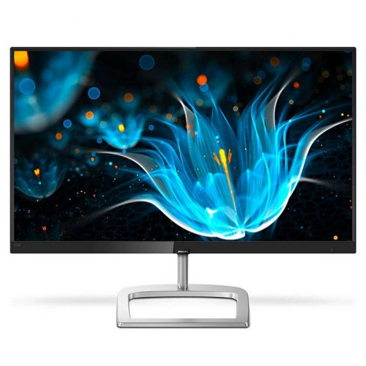
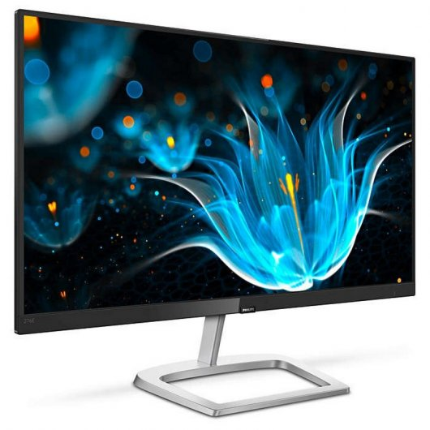
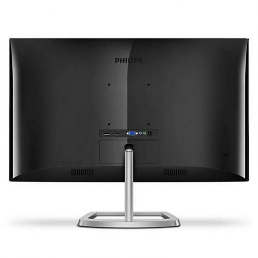

FUTURETECH STORE |
|    |
Philips 24E6 IPS 24"
149€
Te presentamos este maravilloso monitor de 24" pulgadas de Philips. Con resolución FullHD y tecnología LED para una mayor calidad de imagen.
Características
Ultra Wide-Color ofrece una amplia gama de colores para una imagen más viva: La tecnología Ultra Wide-Color ofrece una gama más amplia de colores para una imagen más brillante. La mayor escala de colores de Ultra Wide Color proporciona unos verdes más naturales, unos rojos vivos y unos azules más profundos. Da vida a los contenidos multimedia y a las imágenes, e incluso a las tareas de productividad, con los colores realistas de la tecnología Ultra Wide-Color.
Tecnología panorámica LED IPS para obtener gran precisión de imagen y color: La pantalla IPS utiliza una avanzada tecnología que te ofrece unos ángulos de visualización extra anchos de 178/178 grados, lo que hace posible ver la pantalla desde casi cualquier ángulo. Al contrario que los paneles TN, las pantallas IPS te ofrecen imágenes nítidas y colores vivos asombrosos, lo que las hace perfectas no solo para fotos, películas y exploración web, sino también para aplicaciones profesionales que exijan precisión de colores y brillo consistente en todo momento.
Pantalla de 16:9 con Full HD para unas imágenes nítidas: La calidad de imagen importa. Las pantallas habituales ofrecen buena calidad, pero sabemos que tú esperas más. Esta pantalla cuenta con una resolución Full HD de 1920 x 1080. Gracias al Full HD podrás disfrutar de unos detalles nítidos y de un gran brillo, así como un contraste increíble y colores realistas para una imagen que parece cobrar vida.
Pantalla de borde estrecho para una apariencia perfecta: Las nuevas pantallas Philips tienen bordes ultraestrechos que permiten reducir al mínimo las distracciones y maximizar el tamaño de visualización. Especialmente apto para la visualización dividida o la configuración de la resolución como en juegos, diseño gráfico y aplicaciones de uso profesional, el borde ultraestrecho de la pantalla te da la sensación de estar frente a una pantalla grande.
Reducción de la vista cansada gracias a la tecnología sin parpadeo: Debido a la manera en que se controla el brillo en las pantallas con retroiluminación LED, algunos usuarios pueden experimentar un parpadeo en la pantalla que causa fatiga visual. La tecnología sin parpadeo de Philips aplica una nueva solución para regular el brillo y reducir el parpadeo con el fin de ofrecer una visualización más cómoda.
Especificaciones
Imagen/Pantalla
Tipo de panel LCD Tecnología IPS Tipo de retroiluminación Sistema White LED Tamaño de panel 24 pulgadas Revestimiento de la pantalla de visualización Antirreflectante, 3 h, empañamiento 25 % Relación de aspecto 16:9 Resolución óptima 1920 x 1080 a 60 Hz Densidad de píxeles 82 ppp Tiempo de respuesta (típico) 5 ms (gris a gris)* Brillo 250 cd/m² Relación de contraste (típica) 1000:1 SmartContrast 20 000 000:1 Punto de píxel 0,311 X 0,311 mm Ángulo de visión
178° (H) / 178° (V)
@ C/D > 10
Sin parpadeo Sí Mejora de la imagen Juego de SmartImage Gama de colores (típico) NTSC 93%*, sRGB 124%* Colores de pantalla 16,7 M Frecuencia de escaneado 38 - 89 kHz (H) / 50 -75 Hz (V) Sincronización adaptable Sí Modo LowBlue Sí sRGB Sí
Soporte
Inclinación -5/20 grado
Potencia
En modo 15,72 W (típ.) (método de prueba EnergyStar 7.0) Modo de espera 0,5 W (típ.) Modo desactivado 0,5 W (típ.) Indicador LED de alimentación
Funcionamiento: blanco
Modo de espera: blanco (parpadeante)
Alimentación
Externa
100-240 V CA, 50-60 Hz
Peso
Producto con soporte (kg) 3,99 kg Producto sin soporte (kg) 3,33 kg Producto con embalaje (kg) 6,04 kg
Desarrollo sostenible
Protección del medio ambiente y ahorro de energía
EnergyStar 7.0
EPEAT Silver
RoHS
Sin plomo
Sin mercurio
Material de embalaje reciclable 100 %
Carcasa
Color Negro / Plata Acabado Brillante
Contenido de la caja
Monitor con soporte Sí Cables Cable HDMI, cable de alimentación Documentación del usuario Sí
Conectividad
Entrada de señal
VGA (analógica)
DisplayPort 1.2
HDMI (HDCP digital)
Entrada sincronizada
Sincronización separada
Sincronización en verde
Audio (entrada/salida)
Entrada de audio de PC
Salida de auriculares
Cómodas funciones
Altavoces integrados 2 x 3 W Comodidad para el usuario
Conexión/desconexión
Menú
Volumen
Entrada
Juego de SmartImage
Idiomas OSD
Portugués de Brasil
Checo
Holandés
Inglés
Finlandés
Francés
Alemán
Griego
Húngaro
Italiano
Japonés
Coreano
Polaco
Portugués
Ruso
Chino simplificado
Español
Sueco
Chino tradicional
Turco
Ucraniano
Otra comodidad
bloqueo Kensington
Montaje VESA (100 x 100 mm)
Compatibilidad Plug & Play
DDC/CI
Mac OS X
sRGB
Windows 10, 8.1, 8 o 7
Dimensiones
Producto con soporte (mm) 614 x 465 x 220 mm Producto sin soporte (mm) 614 x 367 x 40 mm Embalaje en mm (an. x al. x prof.) 660 x 514 x 155 mm
Condiciones de funcionamiento
Rango de temperatura (funcionamiento) 0 a 40 °C Rango de temperaturas (almacenamiento) -20 a 60 °C Humedad relativa 20 %-80 % Altitud Funcionamiento: 3658 m, no funcionamiento: 12 192 m MTBF 50 000 (sin retroiluminación) hora(s)
Cumplimiento de normativas y estándares
Aprobación de regulaciones
Marca CE
FCC Clase B
WEEE
CECP
CU
EPA
RCM
BSMI
cETLus
TUV/ISO9241-307
|


{kind=link}
{kind=link}
{kind=link}